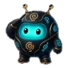
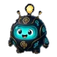
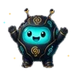

Configure o Lumo em cinco passos
De adicionar o bot até um servidor que se cuida sozinho. Cada passo leva mais ou menos um minuto.
Os cinco passos

Adicione o Lumo ao seu servidorVocê precisa da permissão Gerenciar servidor. O Discord mostra as permissões que o Lumo pede, e as dúvidas frequentes explicam cada uma. Adicionar é grátis.
 Use
Use /setup statusDigite em qualquer canal (precisa da permissão de Administrador). Você recebe uma lista privada do que está configurado e do que não está, com o comando exato para resolver cada pendência. Não muda nada.

Experimente/helpUm tour privado por todos os comandos, com uma linha Experimente em cada página. Ele também indica o painel web (beta) para cargos por reação, Personalizar, sorteios e enquetes. Depois pegue as estrelas desta noite com
/sky watch(o Starkeepers já vem ligado), toque uma música com/playem um canal de voz ou use/gamepara abrir a central de jogos. Mira usou /help👁 Só você pode ver isto
Mira usou /help👁 Só você pode ver isto
Configure boas-vindas, cargo automático, cargos, sorteios e enquetesTudo grátis. Escolha o que precisar:
/setup welcomeescolhe o canal das mensagens de boas-vindas (novos membros ganham um cartão; mude o texto na página Boas-vindas do painel)/setup autoroledá um cargo aos novos membros assim que entram- No painel web (beta), entre com o Discord, escolha seu servidor e abra Cargos para postar um painel de cargos por reação (as pessoas reagem para escolher cargos) ou adicionar 12 cargos de cor em degradê
/giveaway starte/poll create(administradores) fazem um sorteio ou uma enquete com botões, ou use as páginas deles no painel
Dica: deixe o cargo do Lumo acima dos cargos que ele distribui, senão o Discord não deixa ele dar esses cargos. Como resolver.
 Assine o Premium (opcional)
Assine o Premium (opcional)O Premium liga os recursos de IA para o servidor inteiro: chat que entende imagens, com busca na web, voz ao vivo, imagens, vídeo e nome, personalidade, avatar e banner próprios (no painel web). Custa US$4.99 por mês por servidor, com uma assinatura do Ko-fi que você pode cancelar quando quiser. Use
Ver o Premium e como assinar →/premium statusquando quiser para ver seu plano e uso.

Travou em algum passo?
Pergunte no servidor de suporte ou leia as dúvidas frequentes. Quem responde é gente de verdade.